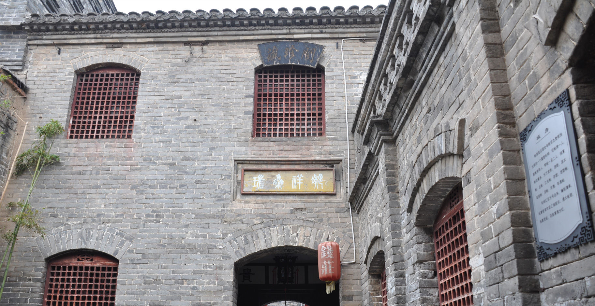
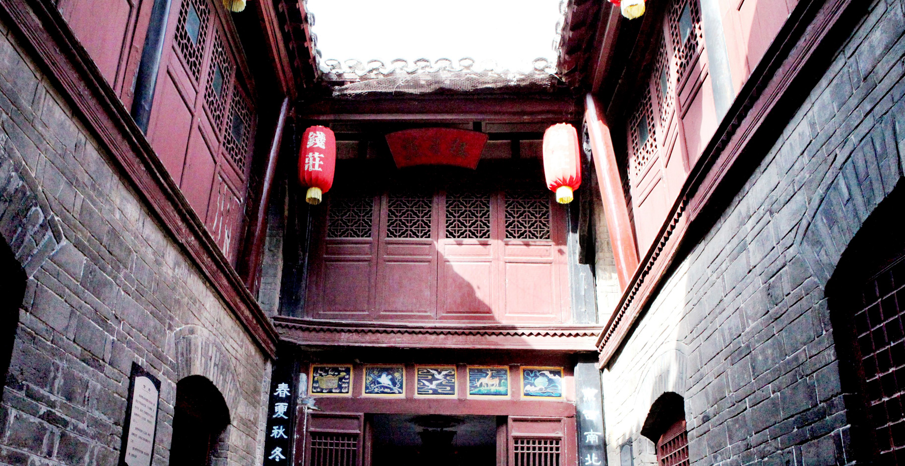
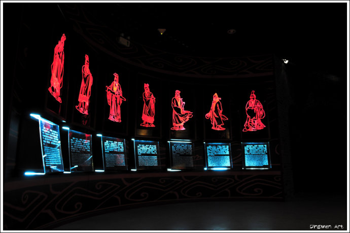
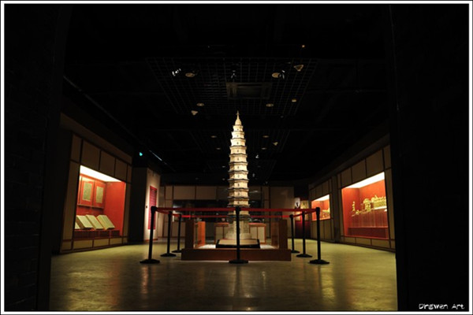
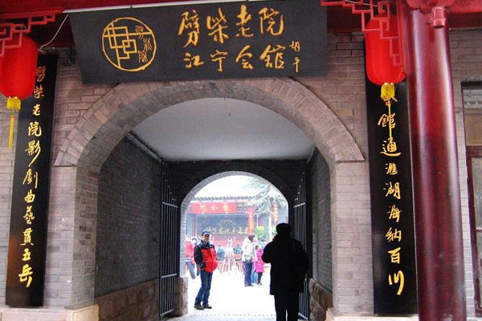
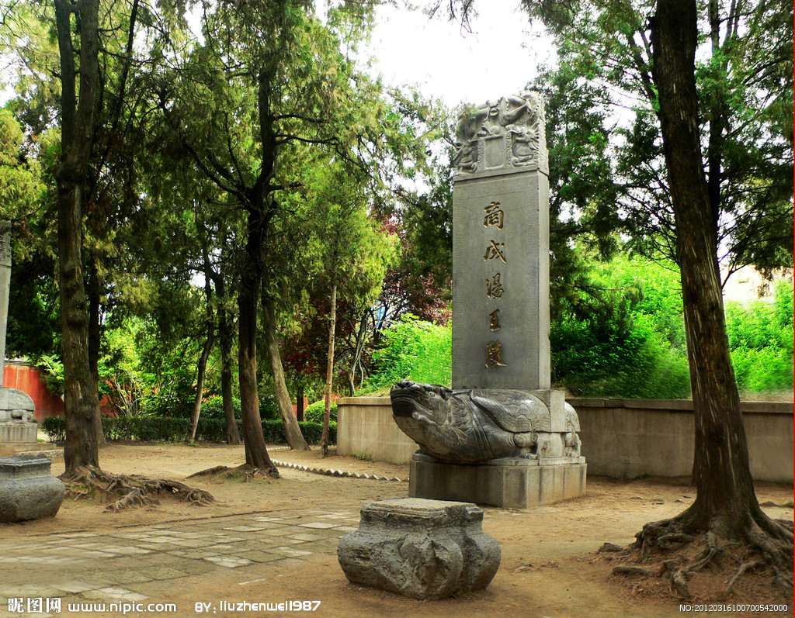
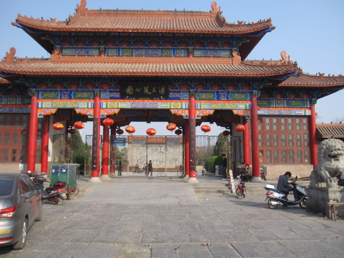
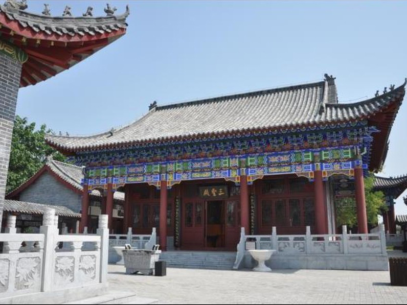
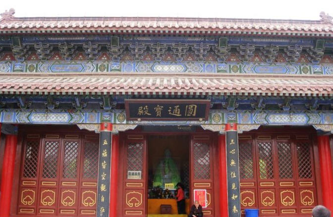

景点名片
南京巷钱庄
等级：国家级重点文物保护单位
南京巷钱庄位于安徽省亳州市北关南京巷19号，是以货币为经营对象的民间金融机构旧址。
亳州自古为一商埠，北连汴洛，南系淮泗，被称为“南北之门户，淮西之都会”，古云亳州“货大境穰，体视大邦”，是南北货物的重要集散地，明清时期就是全国著名的四大药都之一。随着经济的繁荣，钱庄应运而生，亳州的钱庄兴于清代中期，民初极盛，达42家之多。 南京巷钱庄建于清道光五年（公元1825），经营范围主要包括：存款、放款、货币兑换、发行与兑换钱票、银票。随着城市建设的发展，亳州城内原有的钱庄旧址，绝大多数被拆除改建，仅有南京巷钱庄，保存较为完整，作为景点，对外开放。
南京巷钱庄是安徽省保存最为完整的古钱庄建筑，建于道光年间，钱庄是一座两层三进四合院建筑，四通八达，建筑风格中西合璧，布局严谨，自然合理，对研究古代商铺建筑具有很大价值。钱庄的整体建筑是一座三进四合院，共有三道院子八道门，八方来财。这八道门是前门大后门小，越往后越小，成倒斗状，寓意日进斗金。还有一条引水渠，寓意财源广进似流水。天井院式的建筑，是典型的徽派商铺式风格。下雨的时候雨水从四边的房檐上流下，“这个比喻四季来财，肥水不流外人田。”掌柜房的摆设也很有讲究，厅台上有四个瓶子，一个镜子，寓意平平静静、四平八稳。同时，古钱庄建筑对防盗的要求非常高。钱庄的大门上包裹了铁皮，钉上铆钉，两边有错落的门槽，大门关上以后，门缝连刀片都插不进来；屋顶上方有铁丝网，网上有铃铛，如若有人从上面爬过，碰到铁丝，丝上的铃铛就会发出响声报警；墙体是中空的，里面装有沙子，如果有小偷打洞偷盗的话，沙子会自行流下把洞口堵住。龙凤山介绍，除了防盗之外，这样的墙体还可以防火，如果有火灾发生时，把墙砸开沙子流下来就可灭火；还能防潮，没有沙子，钱放在屋里容易生锈，而沙子可以吸潮。南京巷钱庄共有前厅、中厅、三厅、信房、账房、掌柜房、金库、财神堂等30多间，信房管人事、中厅用来接待、账房负责银钱出纳……机构一应俱全，分工明确。其中，钱庄内展示的密押诗，内中颇有玄机，表面看起来像现在银行的职业道德规范，其实每个字都是钱庄内部的密码。这套完备的金融管理制度曾经让很多西方管理专家叹服。现钱庄存有亳州钱庄兴起、发展等历史专题陈列，对研究近代钱庄的历史和商铺建筑有重要史料价值。
亳州博物馆
亳州市博物馆是中国地志性博物馆，位于亳州市北关外，芍花大道209号。以收藏、整理地方文物史料为主，兼集地方自然标本，是建立最早的安徽省地方博物馆。亳州博物馆为仿汉城堡式建筑，是我市综合性博物馆，馆名于1963年由时任中国社会科学院院长郭沫若题写。博物馆占地2.5万平方米，建筑面积5200平方米，室内基本陈列面积2800平方米，文物库房建筑面积1200平方米，馆藏文物2071件套。
亳州博物馆一层主展馆的基本陈列主题：《穿越五千年---亳州文化寻源》，按照历史发展的脉络，展示亳州博大精深的文化魅力和多姿多彩的文物形态。展览由序厅、涡河文明、商汤都亳、道源圣地、汉魏风骨、天下望州、亳商市井、近代和当代亳州8个部分组成，共展出文物700余件套。在内容编排上，融科学性、艺术性、趣味性、互动性为一体，有精美的文物鉴赏展示，有大信息量的文物、亳州相关景点电脑查询，有景观、沙盘、三维动画等立体形象展示，便于观众对文物内在思想的理解及亳州文化源流的整体认知。博物馆二层为临时展厅，为系列专题展览，将分门别类向观众开放。
据有关数据显示，该馆藏品4000余件，都是亳州市发掘、收集所得。主要藏品是曹操宗族墓群出土的东汉时期铭文字砖，共计有570多块，上有铭文2000余字，尤以大草和行书为稀宝。书刻有书信、记事、人名等珍贵史料。馆藏一级品有100余件，其中的春秋晚期蜻蜓眼玻璃珠、银缕玉衣、战国范印、汉代玉刚卯、铜猪、玉猪、红绿拨缕象牙雕尺、驼丝绸的隋代陶骆驼俑，有重要研究价值。
亳州博物馆是亳州城市的名片、亳州历史的底片、亳州文化的芯片。亳州博物馆正在成为我市爱国主义教育的重要基地，文化事业发展的重要阵地，人民群众文化鉴赏精神家园，青少年增长知识、陶冶情操的第二课堂，中外游客踊跃参观的旅游景点，对外交流合作、学术研究的重要平台。对外交流合作的重要平台。
江宁会馆
等级：安徽省重点文物保护单位
位于亳州市古泉路中北侧，是南京药材商人为经销方便，清嘉庆12年（1807）在圆觉寺的基础上集资改建的（因圆觉寺自康熙时期就由南京商人管理使用），具有祭祀神灵，祈福求财，交流信息、商务活动，方便起居，娱乐休闲等功能。传说在此曾经挖出两具干尸，游客慕名前来。
会馆坐北朝南，青砖灰瓦。现存山门、戏楼、配楼、钟楼、鼓楼、看楼、正殿、偏殿等古建筑，计52间。山门3间，明间正门匾额镶嵌砖刻“江宁会馆”四个大字，东西次间匾额，分别镶嵌“钟山”、“分秀”碑刻大字，意为将钟山之秀分到亳州来。进入山门即是戏楼，戏楼与大殿南北相对而建，舞台前突，木结构，屏风彩绘“二龙戏珠”图案，上悬“秀接钟山”匾额，整座戏楼建筑集南北风格于一体，秀丽多姿，看楼与钟楼分列东西两侧，檐廊弯绕，构成一个古老的四合院，具有鲜明的亳州地方特色。江宁会馆对研究清代早期建筑艺术、宗教、商务等具有重要价值。
汤王陵
等级：安徽省重点文物保护单位
汤陵为一高大圆形土丘，高6米余，周长近60米。墓冢前竖“商成汤王陵”石碑，墓南一棵500余年树龄的黄楝树生长顽强，历代重修汤陵碑刻，由于战争破坏，仅存清代康熙12年（1681）和乾隆36年（1771）“重修汤陵碑记”立于左右，记录了历次维修汤陵的情况。园内古树、寝陵、墓碑，构成了帝王园林特色。
亳州市汤王陵位于谯陵北路东侧，涡河北岸，是商汤王的衣冠冢，又称汤王墓。1981年9月安徽省人民政府公布为全省重点文物保护单位。汤王陵公园是后人为纪念成汤王而建。林木荫森，“商成汤王陵”黄土圆丘，下砌条石围护。墓前重修成汤王陵碑是1998年所立，龟趺和碑身的花纹雕刻都很粗糙。不远处有棵干枯的古树，旁边两通石碑都已磨损严重，碑文难以辨认。
据说商朝建国不久，亳州连年大旱，滴雨未落，用了各种办法求雨都无济于事。后来巫师卜一一卦，说应当人做为祭品，老天才能下雨。汤王就长叹一声说：“求雨是为造福百姓，怎能让人民作牺牲呢？”过了一会儿，他断然说科：“假如定要如此，那就让我来吧！”于是他选了一吉日，到了那天，汤王经过沐浴，剪掉头发和指甲，身穿一件白色粗布衣裳，跪在神台前祷告：“天呀，我一个有罪，不要连累万民，万民有罪都在我一个人身上，请上天对我这个罪王进行惩罚吧。”接着由巫师搀扶着登上了一个个高高柴堆，参加求雨，百姓跪在柴堆周围望着贤王的身影，一个个泪如泉涌，战火的时候到了，巫师们用火把，把柴堆点着了，片刻间浓烟滚滚，把汤王围在焰火之中，说来也巧，正在这时天空电闪雷鸣，大雨倾盆而下。人们在欢呼中把汤王从柴堆上扶下来，送回宫中。成汤王在位13年，死后葬于亳州。桑林求雨的故事代代相传，成汤王的功德被世人所赞扬，为了纪念他特修建汤王陵公园。
陈抟庙
等级：AAA级旅游景区
陈抟庙位于亳州市南郊陈庄，庙内有山门、碑亭、主殿、后殿、左右配殿及陈抟文化长廊组成。碑亭内立清光绪年间所刻“希夷故里”古碑一方，碑亭两侧分别立有“重修希夷故里”碑、“陈抟源流考”碑、“澳门陈族归乡认宗”碑。大殿内新塑希夷先生坐像，仙风道骨，飘逸睿智，令人肃然起敬。
陈抟(871年—989年)，字图南，号扶摇子，赐号“白云先生”、“希夷先生”，亳州真源人，他是道教发展史上举足轻重的人物之一。他和道教的开山鼻祖老子是同乡。当时道教门徒都称陈抟为陈抟老祖，他是继老子、张陵之后的道教至尊人物。五代宋初时一位道门高隐和学术大师。晚年隐于武当山九室岩，移华山云台观，多著述。
大殿楹联为：易理包天地，耆龟冠古今。对联点出了陈抟的主要学术成就和他今古少有的高寿。后殿内有希夷先生石刻睡像。左右配殿内有陈抟生平介绍。
陈抟出生地--希夷故里，为亳州谯城区城南宋塘河南岸陈家营村。为纪念陈抟，后人在其故居建庙敬祭，后故居和庙祠均毁。2007年，亳州市政府斥资重建。2010年被全国旅游景区质量等级评定委员会评为“AAA级旅游景区”。
希夷故里陈抟庙是一座庙祠，同时也是陈抟纪念馆和重要文化旅游景点。其陈列是以陈抟生平、学术成就及其对中国文化、哲学思想和道教贡献为主题，展示恢宠的涡水道家文化，弘扬中华文化精神。
白衣律院
等级：安徽省重点开放寺院、安徽省重点文物保护单位
又名白衣庵，位于亳州市谯城区交通路17号，因供奉白衣大士观世音而得名，历史悠久。白衣律院传戒律宗，是中国四大律院之一。清顺治6年（1649），白衣律院由僧人尽休创建，后经华山僧人妙湛、五台山盲僧德升、山西药商董继文先后扩建，规模宏大，建筑巍峨。
民国时期，白衣律院为全国僧侣举行大规模三坛大戒三次，影响海内外。该寺始建于宋末，兴于明清，鼎盛于民国时期。九华山僧人妙湛、五台山盲僧德升、山西药商董继文先后扩建，规模宏大，建筑巍峨。为纪念盲僧德升和药商董继文，白衣律院山门一反习俗面向西北，对着山西方向。山门石扁上“白衣律院”四字为乾隆时期著名书法家邓石如先生手书。现在的白衣律院是由居港亳人汤德荫先生捐资兴建的。白衣律院是亳州市市区唯一的一座佛教寺庙，每年腊八僧众便会在寺院门口施粥。
山门三开间，重檐歇顶，琉璃瓦屋面，门内两侧有四大天王塑像。大雄宝殿为主体建筑，殿宽5间，殿内供奉白衣大士观世音的玉雕像，后殿位于院北侧，观音殿设于大雄宝殿右侧，还设有地藏殿，藏经阁等，后殿位于院北侧5开间，另有配房50余间和完备的宗教设施。